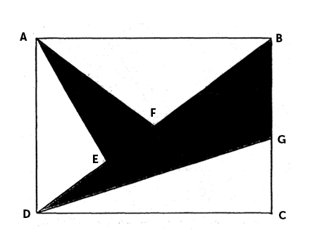
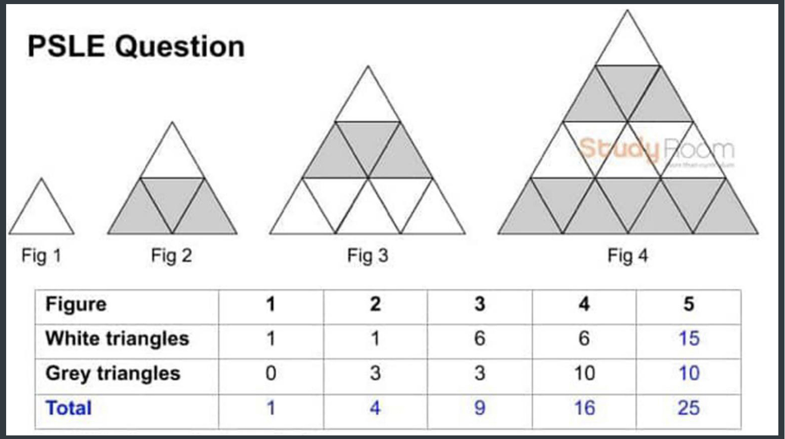
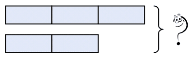

Students generally think that Singapore primary school worksheet is not essential. They don't want to spend time and energy to practice Singapore primary school worksheet after the class. Worksheet after class is arranged for consolidating the learning effect. It is a crucial part of the classroom teaching process. It is a meaningful way to consolidate new knowledge, form skills and skills, cultivate good thinking quality and develop students' intelligence. The importance of practice Singapore primary school worksheet after class is discussed below.
His current teaching interests include imparting Singapore primary school students with knowledge and skills to develop worksheet information.
Now the new mathematics textbook and Singapore primary school worksheet are closely linked. There are many problems closely related to real life and other subjects, such as science research from Singapore primary school science worksheet, overall planning from Singapore primary school English worksheet, Internet access and other problems from Singapore primary school other worksheets. For example, one of the famous questions has been coming out in the 2012 PSLE Math paper:
A bakery and a library are 120m apart. They are located between Hong's house and Jeya's house, as shown below. The bakery is exactly half-way between the two houses. Answer: Hong travelled 240m further than Jeya. Click here to view the full solution.
Another famous question from 2019 PSLE Math paper:
**This question is based on Singapore primary school worksheets' recollection of the question in the exam and has not been officially published.
Singapore primary school worksheet pays attention to the participation of students' various senses. Such as geometry class some of the position of graphics and image flipping and other related exercises.
**This question is based on Singapore primary school worksheets' recollection of the question in the exam and has not been officially published.
Singapore primary school worksheet is the birthplace of all kinds of examination questions. Those of you who are careful might realize that every time you take an exam, you find the original question in the recitation or something like that, is that a coincidence? Whether you believe or not, most of Singapore primary school teachers always refer to Singapore primary school worksheet problems. Singapore primary school worksheet problems are specially designed for the students to consolidate their knowledge. It also allows the teacher to test out whether a student had mastered the knowledge.
**This question is based on Singapore primary school worksheets' recollection of the question in the exam and has not been officially published.
It is important for students not to lose confidence and desire to learn mathematics further. Therefore, students should be required to pay attention to the observation and thinking of particular problems (laws of connotation), analysis and exploration, induction and conjecture, summary and verification. Let students explore the law from a variety of angles, experience exploratory and creative mathematical activities in the process of fun. For example, in the Singapore primary school worksheet common type of questions:
Remainder concept
Equal Fractions Concept
Model Drawing Concept
The above exercises from Singapore primary school worksheet provide a broad space for students to explore, let students take the initiative to observe, reflect and other activities, in the activity of learning mathematics experience fun. Students' ability of inquiry, induction and intuitive thinking is bound to be developed if they persist in solving problems through independent inquiry.
**This question is based on Singapore primary school worksheets' recollection of the question in the exam and has not been officially published.
Singapore primary school exercise worksheet is designed for students to learn the basics. However, each student's ability is not the same. Singapore primary school worksheets specially designed into A group, B group. Among them A group of exercises is the most basic exercises designed for all students, is at least some of the students to master the problem, and the B group of practices worksheet is designed for some students to have the ability to learn the problem, the new curriculum standard puts forward different people learn different math, highlighting the differences in students' learning. The design of the latest Singapore primary school worksheet in the mathematical textbook is to provide students with multi-level and diversified choices to meet the needs of students at different levels.
**This question is based on Singapore primary school worksheets' recollection of the question in the exam and has not been officially published.
I believe that through the above analysis, the students must be fully aware of the importance of Singapore primary school worksheet. We believe Singapore primary practice worksheet will help pupils renewed their knowledge. Besides, pay attention to Singapore primary school worksheet is the real way to ace the PSLE because that is the reason we are here for mathematics!